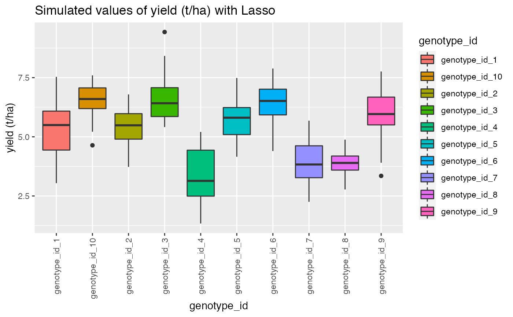
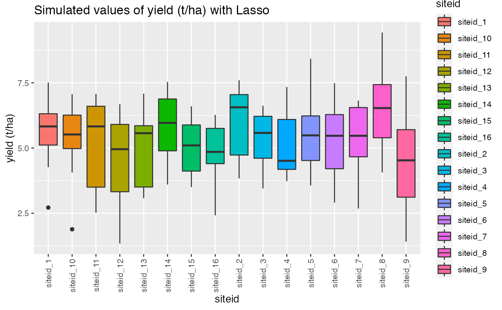
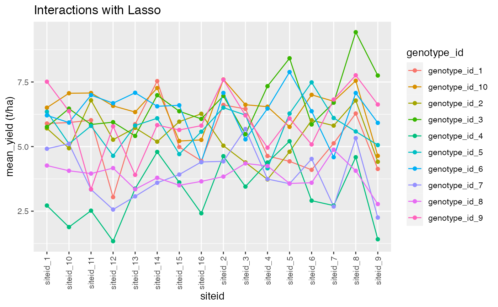

pkg_flow.Rmd
library(InnoVaR)
#> Warning: replacing previous import 'jmuOutlier::rlaplace' by 'rmutil::rlaplace'
#> when loading 'InnoVaR'
#> Warning: replacing previous import 'jmuOutlier::qlaplace' by 'rmutil::qlaplace'
#> when loading 'InnoVaR'
#> Warning: replacing previous import 'jmuOutlier::plaplace' by 'rmutil::plaplace'
#> when loading 'InnoVaR'
#> Warning: replacing previous import 'jmuOutlier::dlaplace' by 'rmutil::dlaplace'
#> when loading 'InnoVaR'
#> Warning: replacing previous import 'copula::profile' by 'stats::profile' when
#> loading 'InnoVaR'
#> Warning: replacing previous import 'Matrix::cov2cor' by 'stats::cov2cor' when
#> loading 'InnoVaR'
#> Warning: replacing previous import 'rmutil::nobs' by 'stats::nobs' when loading
#> 'InnoVaR'
#> Warning: replacing previous import 'dplyr::filter' by 'stats::filter' when
#> loading 'InnoVaR'
#> Warning: replacing previous import 'dplyr::lag' by 'stats::lag' when loading
#> 'InnoVaR'
#> Warning: replacing previous import 'Matrix::toeplitz' by 'stats::toeplitz' when
#> loading 'InnoVaR'
#> Warning: replacing previous import 'copula::coef' by 'stats::coef' when loading
#> 'InnoVaR'
#> Warning: replacing previous import 'Matrix::update' by 'stats::update' when
#> loading 'InnoVaR'
#> Warning: replacing previous import 'copula::logLik' by 'stats::logLik' when
#> loading 'InnoVaR'
#> Warning: replacing previous import 'copula::confint' by 'stats::confint' when
#> loading 'InnoVaR'
library(tidyverse)
library(ggplot2)
library(readxl)
library(readr)
library(copula)
library(mice)
library(checkmate)
library(jmuOutlier)
library(ggpubr)
load("/Volumes/T7 Touch/InnoVaR/data/gen_att.rda")
head(gen_att)
#> # A tibble: 6 × 100
#> trait_1 trait_2 trait_3 trait_4 trait_5 trait_6 trait_7 trait_8 trait_9
#> <chr> <chr> <chr> <chr> <chr> <chr> <chr> <chr> <chr>
#> 1 0 0 0 0 0 0 0 0 0
#> 2 1 1 1 1 1 1 1 1 1
#> 3 2 2 2 2 2 2 2 2 2
#> 4 NA NA NA NA NA NA NA NA NA
#> 5 NA NA NA NA NA NA NA NA NA
#> 6 NA NA NA NA NA NA NA NA NA
#> # … with 91 more variables: trait_10 <chr>, trait_11 <chr>, trait_12 <chr>,
#> # trait_13 <chr>, trait_14 <chr>, trait_15 <chr>, trait_16 <chr>,
#> # trait_17 <chr>, trait_18 <chr>, trait_19 <chr>, trait_20 <chr>,
#> # trait_21 <chr>, trait_22 <chr>, trait_23 <chr>, trait_24 <chr>,
#> # trait_25 <chr>, trait_26 <chr>, trait_27 <chr>, trait_28 <chr>,
#> # trait_29 <chr>, trait_30 <chr>, trait_31 <chr>, trait_32 <chr>,
#> # trait_33 <chr>, trait_34 <chr>, trait_35 <chr>, trait_36 <chr>, …
load("/Volumes/T7 Touch/InnoVaR/data/soil_att_ex.rda")
head(soil_att_ex)
#> # A tibble: 6 × 9
#> yes_no_sample siteid DranaigeClass Litho…¹ Litho…² N P K Clay
#> <chr> <chr> <chr> <chr> <chr> <lgl> <lgl> <lgl> <lgl>
#> 1 Yes 1 Very poorly drain Igneou… IA NA NA NA NA
#> 2 No 2 Poorly drained Metamo… II NA NA NA NA
#> 3 NA 3 Imperfectly drai… Sedime… IB NA NA NA NA
#> 4 NA 4 Moderately well … Sedime… IU NA NA NA NA
#> 5 NA 5 Well drained NA IP NA NA NA NA
#> 6 NA 6 Somewhat excessi… NA MA NA NA NA NA
#> # … with abbreviated variable names ¹LithologyValueClass, ²LithologyValueGroup
## declaring the number of variables in the module
n_var_soil=ncol(soil_att_ex)
## filtering the categorical ones.
soil_cat=soil_att_ex %>% select(which(sapply(soil_att_ex, class) == 'character'))
## filtering the numerical values.
soil_num=soil_att_ex %>% select(which(sapply(soil_att_ex, class) != 'character'))
known_neg_dis=calculate_trig_dis(c(-0.8016201, -0.8022176, -0.7633010))
known_pos_dis=calculate_trig_dis(c(0.5,0.6,0.9))
soil_corr=round(assure_corr(n_var=n_var,corr=sym_sin_soil),2)
sim_data_cop=set_sim_copula(d=n_var,
lower_tri_corr=soil_corr[lower.tri(soil_corr,diag=FALSE)],
n_cont_var=ncol(soil_num),
cont_var_par=list(list(lambda=40),list(df=30,ncp=3),
list(shape=40,scale=10),list(rate=30)) ,
n_unique=length(unique(na.omit(soil_att_ex$siteid))),
mar_cont_dists=c("pois","chisq","gamma","exp"),
var_names=colnames(soil_att_ex)
)
###
cut_data_soil=cut_levels(categorical=soil_cat,
cat_inc_all_levels=c("siteid","yes_no_sample"),
levels_inc_all=list(siteid=c(1:16),yes_no_sample=c(1:2)), continuous_to_cut=sim_data_cop$simulated
)
head(cut_data_soil)
#> DranaigeClass LithologyValueClass
#> 1 Moderately well drained Metamorphic rock
#> 2 Well drained Sedimentary rock (consolidated)
#> 3 Well drained Igneous rock
#> 4 Somewhat excessively drained Metamorphic rock
#> 5 Moderately well drained Sedimentary rock (consolidated)
#> 6 Very poorly drain Igneous rock
#> LithologyValueGroup siteid yes_no_sample
#> 1 SC siteid_1 yes_no_sample_1
#> 2 UK siteid_2 yes_no_sample_2
#> 3 IU siteid_3 yes_no_sample_1
#> 4 IB siteid_4 yes_no_sample_2
#> 5 IP siteid_5 yes_no_sample_1
#> 6 IA siteid_6 yes_no_sample_2We need to simulate the I genotypes expression of n markers. We assume that the genetic constitution of the genotypes does not differ across environments.
#our problem is to simulate the expression of 100 traits for each genotype inside each J environments.
known_neg_dis_gen=calculate_trig_dis(c(-0.8016201, -0.8022176, -0.7633010,0.80))
known_pos_dis_gen=calculate_trig_dis(c(0.5,0.6,0.9,0.1))
# we redefine the structure
n_genotypes=10
n_markers= ncol(gen_att)
gen_i_expr=vector("list", length = n_markers)
## we need to insert the levels of genotypes to be considered
genotypes_id=sprintf("genotype_%d",seq(1:n_genotypes))
gen_att=add_to_df(gen_att,genotypes_id)
names(gen_att)[101]="genotype_id"
gen_i_coords=module_coords(n_var=ncol(gen_att),
which_neg = c("1_2","4_5","2_3","20_4","30_3"),
dis_neg_know_ass =known_neg_dis_gen,
coo_known_neg_ass=c("4_5","2_3","20_4","30_3"),
dis_pos_know_ass =known_pos_dis_gen,
coo_known_pos_ass = c("3_9","4_5","6_8","7_8"),
by=0.0001)
## creating the symetric matrices of distances and corrs
sym_tri_gen_i=sym_mtx(vector=gen_i_coords$coords$distance,
n_var=ncol(gen_att),
var_names = colnames(gen_att)
)
sym_sin_gen_i=sym_mtx(vector=gen_i_coords$coords$sin,
n_var=ncol(gen_att),
var_names = colnames(gen_att)
)
gen_i_corr=round(assure_corr(n_var=ncol(gen_att),corr=sym_sin_gen_i),2)
sim_data_cop_gen_i=set_sim_copula(d=ncol(gen_att),
lower_tri_corr = gen_i_corr[lower.tri(gen_i_corr,diag=FALSE)],
n_cont=0,
cont_var_par = list(),
n_unique=length(unique(na.omit(gen_att$genotype))),
mar_cont_dists=c(),
var_names=colnames(gen_att))
#> Warning in rmvnorm(n, sigma = getSigma(copula)): sigma is numerically not
#> positive semidefinite
cut_data_gen_i=cut_levels(categorical=gen_att,
cat_inc_all_levels=c("genotype_id"),
levels_inc_all=list(genotype_id=c(1:10)), continuous_to_cut=sim_data_cop_gen_i$simulated,corrs=gen_i_corr
)
## this data contains the expression of the markers
## for each of n_genotypes
head(cut_data_gen_i[1:3,c(1,4,101)])
#> trait_1 trait_4 genotype_id
#> 1 0 1 genotype_id_1
#> 2 0 0 genotype_id_2
#> 3 1 0 genotype_id_3
## the data will repeat across n_sites environments.
n_sites=length(na.omit(soil_att_ex$siteid))
sites_id=sprintf("siteid_%d",seq(1:n_sites))
gens_site_id=rep(sites_id,each=n_genotypes)
abemus_genomics=do.call("rbind", replicate(n_sites, cut_data_gen_i, simplify = FALSE))
abemus_genomics$siteid=gens_site_id
head(abemus_genomics[1:3,c(1,10,101,102)])
#> trait_1 trait_10 genotype_id siteid
#> 1 0 0 genotype_id_1 siteid_1
#> 2 0 2 genotype_id_2 siteid_1
#> 3 1 0 genotype_id_3 siteid_1
tail(abemus_genomics[1:3,c(1,10,101,102)])
#> trait_1 trait_10 genotype_id siteid
#> 1 0 0 genotype_id_1 siteid_1
#> 2 0 2 genotype_id_2 siteid_1
#> 3 1 0 genotype_id_3 siteid_1
target <- sim_target(
X_gene = dat %>% dplyr::select(`trait_1`:`trait_100`),
X_env = dat %>% dplyr::select(`DranaigeClass`:`yes_no_sample`),
method = "lasso", pars = list(lambda = 0.2, sigma = 1,k=3),
marginal_mean = 5.3, marginal_sd = 1.5
)
dat$target<-target$target
qplot(genotype_id, target, data = dat,
geom= "boxplot", fill = genotype_id)+ theme(axis.text.x = element_text(angle = 90, vjust = 0.5, hjust=1))+ggtitle("Simulated values of yield (t/ha) with Lasso")+ylab("yield (t/ha)")
qplot(siteid, target, data = dat,
geom= "boxplot", fill = siteid)+ theme(axis.text.x = element_text(angle = 90, vjust = 0.5, hjust=1))+ggtitle("Simulated values of yield (t/ha) with Lasso")+ylab("yield (t/ha)")
#interaction.plot(dat$genotype, dat$environment, dat$yield, fixed = TRUE)
dat %>%
group_by(genotype_id,siteid) %>%
summarise(mean_yield = mean(target)) ->tips2
tips2 %>%
ggplot() +
aes(x = siteid, y = mean_yield, color = genotype_id) +
geom_line(aes(group = genotype_id)) +
geom_point()+ggtitle("Interactions with Lasso")+ylab("mean_yield (t/ha)")+ theme(axis.text.x = element_text(angle = 90, vjust = 0.5, hjust=1))